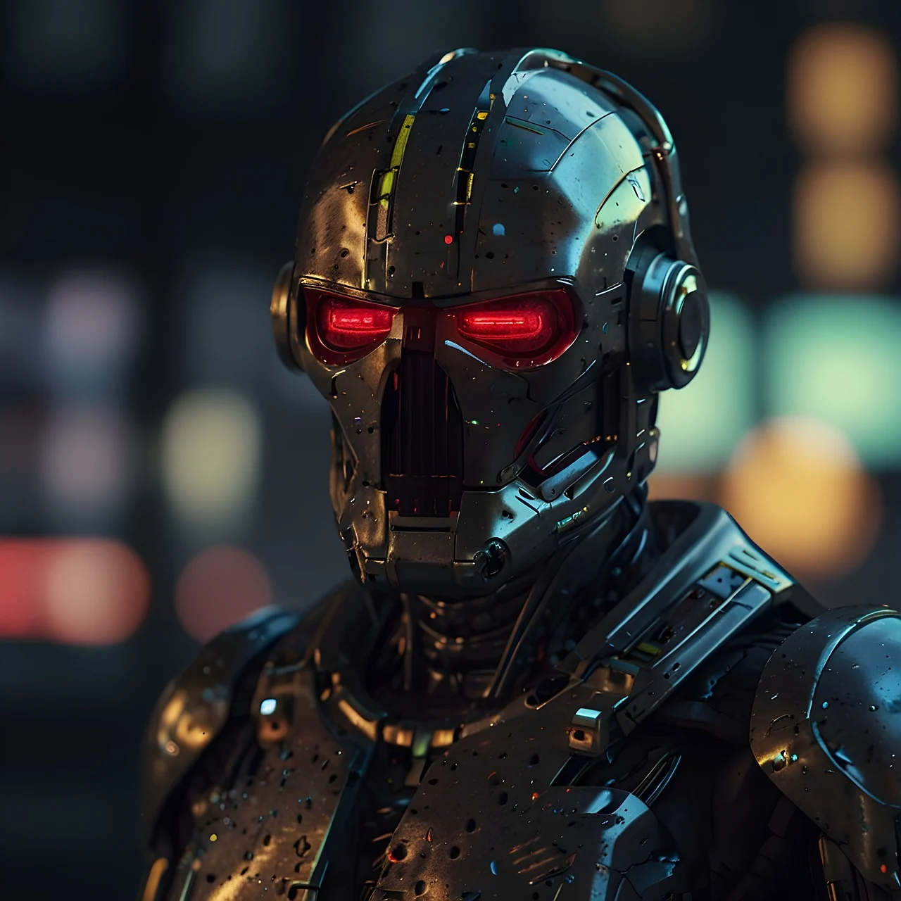
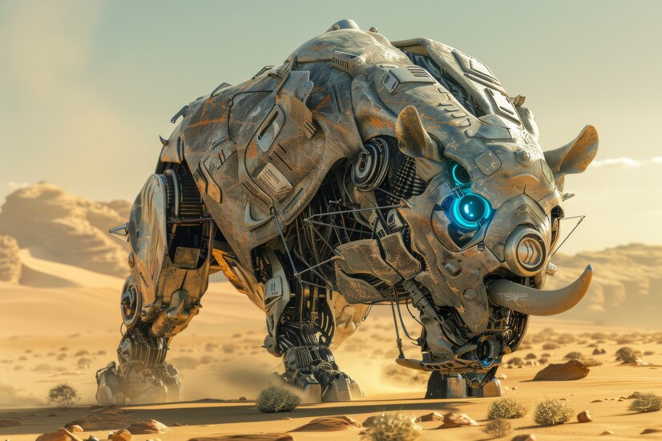

Earth's Greatest Weapons Against Outer Space Threats
The Top War Robots Defending Our Planet
Captain Arjun(2175)
Once a decorated human captain from India, Captain Arjun Singh became a white-armored cyborg after a
critical
injury. Wielding advanced plasma guns, his leadership and tactical genius were pivotal during the
Martian
Offensive of 2175, uniting Earth's forces against the invaders.
Aquila Geist (2302)
From Germany, Aquila Geist features an eagle-like head and harbors a human soul within a man-made
body. As the
Space Force Commander, his extraordinary aerial agility made him unrivaled in air and space combat.
In 2302, he
thwarted the Celestial Fleet with daring maneuvers that became legendary.
Commander Evelyn Drake (2450)
A formidable cyborg from America, Evelyn Drake is both dominant and deeply compassionate. After
losing her
family, including her children, to space criminals, she channeled her tragedy into protecting
others. Her
strategic brilliance dismantled the Orion Syndicate in 2450, bringing hope to countless colonies.
Viktor Nyx (2499)
An extremely powerful AI robot from Russia, Viktor Nyx constructed his own body based on a child's
drawing.
Despite his intimidating appearance, he is devoted to humans. In 2499, he single-handedly repelled
the Cyber
Swarm, showcasing both intellect and heart as a true savior.
Project Zenith (2560)
The UAE's greatest invention to date, Project Zenith is a cyborg that combines the best attributes
of Captain
Arjun Singh and Viktor Nyx. This advanced being eliminated global threats with unprecedented speed
during the
Quantum Crisis of 2560, redefining rapid response in planetary defense.
Amaya (2678)
A beautiful female robot from Japan, Amaya was invented by a person as his companion. After he
passed away, she
chose to protect her beloved planet. With abilities like mind control and machine manipulation, she
saved Earth
in 2678 by turning enemies against each other during the Photon Wars, preventing needless
destruction.
Li Wei (2785)
Originating from China, Li Wei was created as a side project but devoted himself to Earth's safety.
Gentle and
cold-minded, his hacking abilities allowed him to infiltrate any system. In 2785, he dismantled 90%
of an
invading fleet alone, demonstrating the immense power of cyber warfare.
Shadow Strider (2890)

From India, Shadow Strider is an assassin robot who was originally a normal soldier bot. Gaining
consciousness,
he upgraded himself to become extremely agile and the fastest of his kind. Dreaming of living like a
human and
growing a family, he knew he had to eliminate all space threats—and in 2890, he did just that.
Kibo the Colossus (3001)

A rhino-like giant robot from Africa, Kibo was made by the most intelligent scientist of his time.
Controlling
it remotely, the scientist and Kibo overpowered a massive army of 15,000 space bots during the
Eclipse Battle of
3001. Their synergy and sheer destructive power became a symbol of resilience.
Eclipse (3460)
A omnipotent being of extraterrestrial origin, Eclipse has a human-like shape and god-like
powers to
manipulate time and space. After falling in love with a human woman and experiencing his first true
connection,
he chose to live a normal life. Upon her passing, he vowed to protect Earth and his children. In
3460, his
intervention thwarted the Dimensional Rift, securing the future for all.